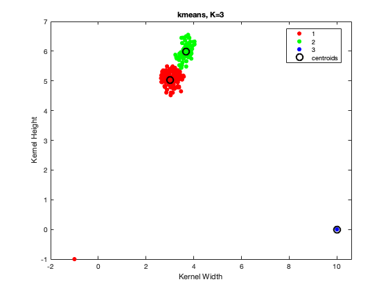
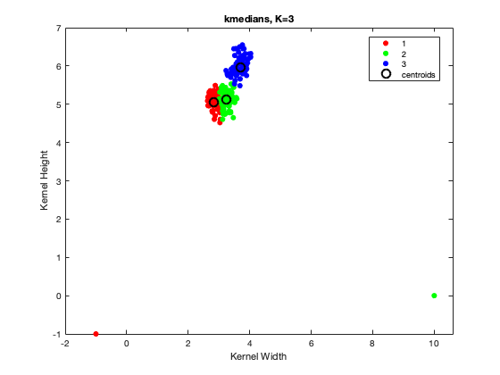
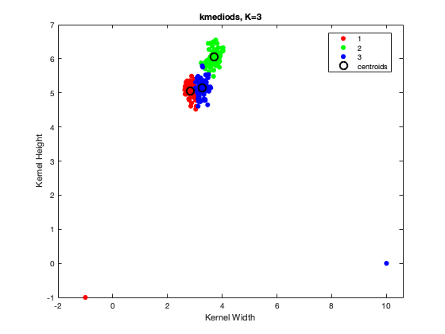

data = readtable('seeds.csv');
kernel_width = data.Var5;
kernel_height = data.Var7;
variety = data.Var8;
X = [kernel_width kernel_height];
X = [X; [-1 -1]; [10 0]];
disp('3a)');
disp('Scatter Plot');
figure(1);
[idx, C] = kmeans(X, 3, 'Start', 'Sample', 'Replicates',100);
gscatter(X(:,1), X(:,2), idx);
xlabel('Kernel Width');
ylabel('Kernel Height');
hold on;
plot(C(:,1), C(:,2), 'ok', 'MarkerSize', 10);
title('kmeans, K=3');
legend('1', '2', '3','centroids')
snapnow;
disp('3b)');
disp('Scatter Plot');
figure(2);
[idx, C] = kmeans(X, 3, 'Start', 'Sample', 'Replicates',100, 'Distance','cityblock');
gscatter(X(:,1), X(:,2), idx);
xlabel('Kernel Width');
ylabel('Kernel Height');
hold on;
plot(C(:,1), C(:,2), 'ok', 'MarkerSize', 10);
title('kmedians, K=3');
legend('1', '2', '3','centroids')
snapnow;
disp('3c)');
disp('Scatter Plot');
figure(3);
[idx, C] = kmedoids(X, 3, 'Start', 'Sample', 'Replicates',100, 'Distance','cityblock');
gscatter(X(:,1), X(:,2), idx);
xlabel('Kernel Width');
ylabel('Kernel Height');
hold on;
plot(C(:,1), C(:,2), 'ok', 'MarkerSize', 10);
title('kmediods, K=3');
legend('1', '2', '3','centroids')
snapnow;
disp('4d)')
disp('In k-means, we see one cluster that contains just one of the outliers. We can see that k-means is sensitive to outliers.');
disp('As we know, in case of l2-norm calculation, one very distant outlier can modify the mean to a large extent.');
disp('In case of k-medians, clusters seem right - here the outlier doesn’t have a huge impact on centroids and the clusters, as we');
disp('use the manhattan distance. k-medians is more robust that kmeans. Even in-case of k-mediods using manhattan distance, clusters');
disp('seem right - the outlier doesn’t have a huge impact. This is more robust than k-means. Also in general, k-mediods is more robust');
disp('than k-medians as well. It chooses cluster centres among the data points as opposed to k-medians. On zooming into the figures,');
disp('this can be clearly observed.')
3a)
Scatter Plot

3b)
Scatter Plot

3c)
Scatter Plot

4d)
In k-means, we see one cluster that contains just one of the outliers. We can see that k-means is sensitive to outliers.
As we know, in case of l2-norm calculation, one very distant outlier can modify the mean to a large extent.
In case of k-medians, clusters seem right - here the outlier doesn’t have a huge impact on centroids and the clusters, as we
use the manhattan distance. k-medians is more robust that kmeans. Even in-case of k-mediods using manhattan distance, clusters
seem right - the outlier doesn’t have a huge impact. This is more robust than k-means. Also in general, k-mediods is more robust
than k-medians as well. It chooses cluster centres among the data points as opposed to k-medians. On zooming into the figures,
this can be clearly observed.